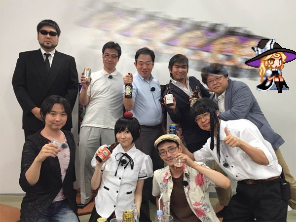

Production
Caveats of an Independent Series
Since Touhou Project is primarily maintained by one man, the series can potentially fall into the pitfall of very limited perspectives. This can be seen in a few aspects, such as the Japanese series maintained by a Japanese man being set in a world heavily inspired by feudal Japan. On the contrary, due to being an independent developer, there's no broader audience that needs to be appealed to. It's not like the greater market as a whole where a project will get canned if it won't sell well, ZUN has room to experiment and he takes great advantage of that. It is clear that he has his comfort zone that he mostly sticks to, but he's experimented throughout the years, whether it's with genre, character design, or character backstories. Due to this freedom, the character diversity is one of the most applauded parts of the series. It's nothing absolutely mindbreaking, since basically every character is drawn with the same skin tone, but the characters are more diverse in other ways, such as personality and religion. Even the cultures the characters are based on vary, since a lot of the characters are from Japanese folkore, but there's also European influence, with vampires, werewolves, and even dullahans.
Collaborators
Although a majority of the work, at least when it comes to games, is done by ZUN himself, he's collaborated with others a few times. A common group he collaborates with is Twilight Frontier, who typically
assist with the fighting games in the series. Although this group of individuals is quite similar to him, being middle-aged Japanese men, it still worth noting that the entire series isn't strictly directed
by his inputs.
He's worked with a few women as well, a common collaborator being his wife occasionally helping him with art. Moe Harukawa is another female artist that has collaborated with him. She's the illustrator of
the Forbidden Scrollery series of manga, as well as the artist of a few fighting games, but besides that she remains relatively unknown.

ZUN and the members of Twilight Frontier posing with some drinks